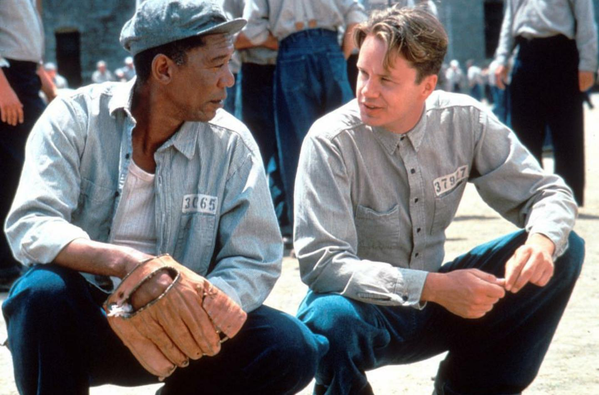

En 1947, Andy Dufresne (Tim Robbins), un joven banquero, es condenado a cadena perpetua por asesinar a su esposa y su amante.
A pesar de declararse inocente, es encarcelado en Shawshank, el penitenciario más duro del estado de Maine.
Allí se encontrará con Red Redding (Morgan Freeman), un hombre desilusionado, encarcelado desde hace más de veinte años.
Es cuando empieza una gran historia de amistad entre los dos hombres, sin un pasado, un presente y un futuro.
Andy Dufresne no tendrá más remedio que ir haciéndose a la idea de su terrible situación, donde, por lo menos,
su compañero Redding le será de gran ayuda.
Andy adquiere ciertos privilegios por resolver problemas fiscales a los guardias así como al alcaide,
para quien organiza una extensa red de corrupciones políticas.
Andy se entera por otro recluso de que el verdadero asesino de su mujer está encerrado en
otro penal, por lo que pide que se reabra su caso. El alcaide ordena entonces asesinar a
este nuevo recluso para evitar la marcha de Andy y que salgan a la luz sus sucios negocios.
A partir de ese momento Andy pierde todos sus privilegios, por lo que decide jugarse el todo
por el todo y aprovecha los servicios que el alcaide todavía requiere de él para recuperar su
honor y su libertad.